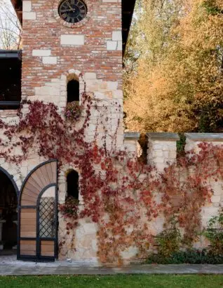

Vous avez pour habitude de voir les mariages se dérouler en été ! Pourquoi ne pas faire du vôtre un mariage unique et le célébrer lors des périodes d’hiver en Gironde ?

Un mariage hivernal !
Vous souhaitez un mariage singulier plein de partage et d’émotions sur la région bordelaise, optez pour une union pleine d’originalité et emplie de la magie de l’hiver. Quoi de plus romantique que cette période de l’année, propice à la convivialité et au rapprochement pour célébrer son amour !
Les avantages de se marier en hiver
Honorer son mariage en hiver peut donc être une option tout à fait charmante et pleine d’avantages. Voici 3 bonnes raisons de considérer un mariage en hiver :

Une ambiance chaleureuse et unique
L’hiver est synonyme de cocooning, de feux de cheminée mais également de chaleur réconfortante. Le mariage hivernal offre alors une ambiance intime et chaleureuse, propice aux souvenirs inoubliables et féeriques. Vous pourrez aussi utiliser l’ambiance des chalets, les tissus douillets, la pureté des vignes, etc, pour créer une atmosphère unique et réconfortante qui vous démarquera et étonnera vos invités !

Lieux disponibles et tarifs avantageux
Étant donné que les mariages en hiver sont plus rares et moins demandés, vous aurez la possibilité d’un plus grand nombre de choix en ce qui concerne les lieux de réception. Plusieurs prestataires proposeront aussi des tarifs avantageux pour les mariages hors saison, ce qui vous permettra de faire de sacrées économies !

Expériences culinaires
L’hiver est réputé pour ses plats gourmands et réconfortants. Vos invités seront ravis de trouver des plats chauds et “classiques” tels que la raclette et la tartiflette, revisités spécialement pour l’occasion ! Vous pourrez également proposer des minis bars spécial hivernal avec l’authentique vin chaud ou le mythique chocolat chaud.
Mon rôle ?
Mon rôle de wedding planner sera là pour vous aider et faire de votre mariage un évènement haut de gamme, chaleureux et plein d’amour. Quelle vision idyllique que de voir la belle mariée s’avançant dans sa belle robe blanche dans cet univers hivernal.
De la décoration de la salle, au planning et aux animations, je me chargerai de toute la coordination de votre mariage jusqu’au jour J. Grâce à mes prestations en tant qu’organisatrice de mariage, je serai faire de ce jour le plus important et le plus beau de votre vie !
Alors pour un mariage unique comme celui-là, n’hésitez plus et contactez- moi par mail ou par téléphone et faisons ensemble un mariage en hiver plein de magie et de beauté pour une union pour l’éternité.

Des souvenirs uniques
Le mariage hivernal est ainsi une occasion idéale pour créer des souvenirs uniques et magiques tout en associant ambiance chaleureuse, décors qui font rêver et tarifs avantageux!
Alors, pourquoi ne pas choisir un mariage en hiver et faire de votre Jour J une célébration hivernale mémorable ?
Lovely Day Event c'est plusieurs types de prestations
L'organisation de mariage
Je vais intervenir sur toutes les étapes de vos préparatifs et vous guider dans vos choix. Je suis force de proposition pour que votre mariage ne ressemble qu’à vous.
Décoration de mariage
Créative et passionnée, je suis certifiée Wedding Designer et je conçois une ambiance scénographique qui correspond au thème de votre mariage.
Coordination le jour J
Je serai le chef d’orchestre pour gérer les différents prestataires, la mise en place de votre décoration et le déroulement de cette belle journée.